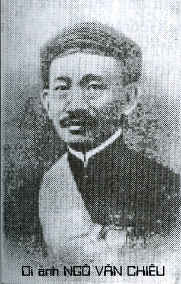
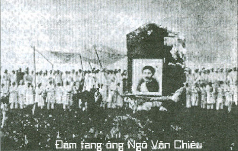

Ngô Văn Chiêu là một trong những người thành lập đạo Cao Đài ở miền Nam, đạo hiệu là Ngô Minh Chiêu, sinh ngày 28 tháng Hai 1878 tại Bình Tây, Chợ Lớn. Nhắc tới ông Phủ Ngô Văn Chiêu, các tín hữu Cao Đài thường truyền tụng hai câu thơ do Đức Từ Phụ định cho số phận của Ngài như sau nầy:
“Giờ này Thầy điểm thâm công,
“Ngày sau con sẽ cỡi Rồng về Nguyên”
“Cỡi Rồng về Nguyên” tức là “thác trên sông Cửu Long”, và lời Ngọc Hoàng Thượng Đế giáng cơ cho Ngô Minh Chiêu thật chính xác.

Ngô Văn Chiêu có dòng dõi quan lại ngoài Huế. Đến đời thân phụ ông là Ngô Văn Xuân về cư ngụ tại khu Hòa Hưng. Sau đó ông Xuân kết hôn với bà Lâm Thị Quí, và hạ sinh Ngô Văn Chiêu tai một ngôi nhà thờ ở phía sau chùa Quan Thánh, nơi đó bây giờ là số 242 Lê Quang Liêm, Chợ Lớn. Ít lâu sau. thân phụ và thân mẫu có việc làm ăn phải đi xa, nên gởi cậu bé mới sinh ấy cho người cô là Ngô Thị Đây, có chồng người Minh Hương, có tiệm bán thuốc Bắc tại chợ Mỹ Tho Tuy sớm côi cút, nhưng cậu bé Ngô Văn Chiêu tỏ ra một đứa bé hiền hậu, có đạo đức, chăm học và biết vâng lời. Năm 12 tuổi, cậu Ngô Văn Chiêu một mình làm gan đến nhà ông phủ Sủng (Lê Công Sủng, thân phụ công tử Phước George), tùng sự tại Tòa Bố Mỹ Tho là chỗ quen biết với song thân cậu, để nhờ chỉ bảo cách thức làm đơn xin vô học nội trú trường trung học Mỹ Tho, lúc đó còn gọi Le Myre De Vilers. Theo lời người nhà là cô Ngô Thị Nguyệt thuật lại, cậu bé Ngô Văn Chiêu trình bày hoàn cảnh của nhà mình, khiến ông phủ Sủng động lòng từ tâm, nên dẫn Ngô Văn Chiêu vào gặp tham biện Pháp để giới thiệu. Sau mấy năm học ở đó, Ngô Văn Chiêu thi đậu vào trường Chasseloup Laubat, và đến năm 21 tuổi Ngô Văn Chiêu thi đậu Thành Chung. Lúc đó vào năm 1899 và liền được bổ làm Thơ ký sở Tân Đáo (sở Di Trú).
Năm 1902. phong trào hầu đàn tiên ở Nam Kỳ bắt đầu phổ biến. Ngô Văn Chiêu lên Thủ Dầu Một (Bình Dương sau này) để cầu thọ cho thân mẫu và luôn tiện muốn biết việc tiến trình. Tiên Ông có giáng cho Ngô Văn Chiêu một bài thơ tứ tuyệt đại ý khuyên ông lo tu hành, về sau được hưởng phước.
Sau năm 1909, Ngô Văn Chiêu đổi về làm việc tại Tòa Bố Tân An. Ở đây ông giao thiệp với các bạn nhà Nho cũng có khuynh hướng tu hành, làm phước, giúp đời như các ông Một Kim (Đoàn Văn Kim), Lê Kiến Thọ (Bộ Thọ), Trần Phong Sắc (người dịch nhiều truyện Tàu), ông giáo Nguyễn Văn Vân. Ngoài việc cầu cơ. hầu đàn, Ngô Văn Chiêu cũng thường cùng các ban chơi thú tao nhã “thả cầm thi”, mướn ghe chèo trôi theo dòng nước cùng nhau xướng hoa thi văn giữa cảnh gió mát trăng thanh. Năm 1917, Ngô Văn Chiêu thi đỗ Tri huyện và cuối năm ấy thân mẫu ông lâm trọng bịnh. Đích thân ông Chiêu xuống đàn Cái Khế (Cần Thơ) cầu thuốc. Theo lời một vị cao niên là bà cu huyện Tiến, cô ruột của hội đồng Thơm ở Cần Thơ kể lại, khi vào hầu đàn, ông Chiêu ăn mặc như thường dân đứng ngoài hành lang, nhưng ơn trên giáng cơ gọi ông vào cho bài thuốc và bài thơ dài, có mấy dòng quan trọng sau đây:
“Họ Ngô gắng sức lòng mong,
Tên Chiêu xem thấy ở trong hay ngoài…
Sáu mươi hội điểm linh đằng,
Cầu cho mẹ mạnh mới bằng lòng con.
Ba ngày trọng điểm vuông tròn,
Sớ dưng cho mẹ, điểm son tha rày.”
Đai ý bài thơ ấy cho biết lần này thân mẫu ông qua khỏi cơn trong bệnh, Ngô Văn Chiêu rất mừng và tin tưởng rằng mọi việc thiện ác của ông đều có ơn trên soi xét. Vì lẽ đó ông càng làm lành lánh dữ, tu dưỡng tâm tánh, giúp đỡ mọi người. Sau lần đó. Ngô Văn Chiêu còn lên Thủ Dầu Một để hầu đàn một lần nữa. Con của chủ nhà lập đàn Minh Thiên là Trần Hiển Vinh ở chợ Thủ có thuật lại: “hôm ấy, Ngô Văn Chiêu cùng ông phủ Kim hầu đàn. Ông Kim quỳ ở trong, ông Chiêu quỳ ở ngoài. Khi quan Thánh giáng cơ, gọi tên Chiêu vào hầu và cho bài thi, đại ý nói vườn thuốc Phật Tổ đã trốc gốc. Qua đó, ông Chiêu biết số phận của mẫu thân. Hai năm sau. bà thân ông từ trần.”
Vào năm 1920, trước khi đổi đi Cần Thơ. ông Chiêu được lịnh bề trên chỉnh đốn việc cầu tiên. Trong một buổi hầu đàn có các ông Trần Phong Sắc (thông chữ Nho và quán triệt văn thơ. lịch sử nước Tàu), ông Bộ Thọ, ông Một Kim. Bài thơ được ghi nhận:
“Ngũ chơn bửu khí lâm triều thế
Giá hạc đằng vân, xiển tư nguyên…”
Có một Tiên Ông xuống xưng là Cao Đài Tiên Ông, cơ gõ mạnh và bảo ông Trần Phong Sắc sửa lại hai câu ấy. Ông Sắc vốn là nhà Nho uyên bác nhưng không biết Cao Đài Tiên Ông là ai, nên trả lời một cách sưồng sã:
– Bài thỉnh cơ nầy ra 100 năm rồi, từ bên Trung Quốc qua đây, không ai dám cho là sai, nay Ngài bảo sửa, nói vậy thiệt là trật hay sao?
Tiên Ông quơ cơ, đập vào đầu ông Sắc vô lễ, ông lẹ sụt xuống né khỏi. Kế đó đức Cao Đài Tiên Ông gọi tên Chiêu biểu sửa, ông Chiêu bèn sửa lại:
“Bửu chơn ngũ khí lâm triều thế…”
Tiên Ông khen. Kể từ đó. Trần Phong Sắc không làm tháp đàn nữa. Từ đó nghe danh Cao Đài nhưng không biết là ai, chỉ riêng ông Chiêu tin là Trời mới dám sửa kinh sách từ xưa như vậy.
Từ năm 1920-24, Ngô Văn Chiêu đổi ra làm chủ quận Hà Tiên, rồi Phú Quốc. Trước khi ông Chiêu đến, Hà Tiên có phong trào cầu tiên, hầu đàn của mấy ông Lâm Tấn Đức, Nguyễn Thành Diêu, ông Phán Ngàn…. cũng thường tổ chức cầu cơ, nhưng phải nhiều lần mới có Tiên Ông xuống cơ. Nhưng lạ lùng thay, mỗi lần ông huyện Chiêu đến hầu dàn, nguyện vái, cơ lên dễ dàng. Thạch Động là một hang đá thiên nhiên, nằm trên vệ đường từ tỉnh lỵ Hà Tìên lên biên giới, trong có chùa. Nơi đây thường diễn ra các buổi lập đàn cơ. Có lần. một Tiên Cô xưng Ngô Kim Liên cho hai bài thơ:
1- Văng vẳng nhạn kêu bạn giữa thu
Rằng trời cùng đất vẫn xa mù
Non Tây ngoảnh lại đường gai góc,
Gắng chí cho thành bực trượng phu
2- Ngần ngần trăng tỏ giữa thu,
Cái cảnh Tây phương vẫn mịt mù,
Mắt tục nào ai trông thấy đấy,
Lắm công trình mới dùng công phu.
Một lần đến hầu đàn tiên tại nhà ông Lâm Tấn Đức, một thân nhơn của nhà thơ Đông Hồ, Tiên Ông cho bài thơ:
“Cao Đài minh nguyệt Ngô Văn Chiêu,
Linh lung vạn hộc thể Quan Diêu
Vô thậm Sự Đức, nhiệm ngao du,
Bích Thủy, thanh sơn, tương đối tiếu”
Khi đổi ra Phú Quốc, quan huyện Chiêu dược dân chúng mến phục vì là một vi quan hiền lành, đạo đức. Cũng như ở Hà Tiên, Phú Quốc trước khi Ngô Văn Chiêu trấn nhậm, lập đàn cầu Tiên ra khó khăn. Cầu nhiều lần Tiên Ông mới nhập một lần. Khi Ngô Văn Chiêu lập đàn, vừa vái xong là có Tiên Ông nhập, không xưng danh tánh, biểu ông Chiêu nhận làm đệ tử, sẽ được Tiên Ông truyền đạo. Về sau, ông Chiêu biết Tiên Ông đó chính là Ngọc Hoàng Thương Đế. Một lần Tiên Ông giáng cơ, dạy ông Chiêu phải ăn chay 10 ngày, lo tu nhơn, tích đức. Những người phù hô, hay hương chức địa phương thường theo hầu đàn với Ngô Văn Chiêu ở Phú Quốc là: Hương hào Khâu, ông giáo Mẫn, biện Tỳ, bà phủ Phẩm, hội đồng Phanh… Một buổi sớm mai, lối 8 glờ quan huyên Chiêu đang ngồi trên võng phía sau dinh quận đường, bỗng thấy một con mắt hiện ra rất lớn, cách xa chừng 2m, chói như mặt trời. Ông Chiêu nhắm mắt lai, rồi khấn:
– Bạch Tiên Ông, đệ tử thấy rõ cái huyền diệu của Tiên Ông rồi, xin Tiên Ông đừng làm vậy nữa, đệ tử sợ lắm. Nếu Tiên Ông muốn đê tử thờ thiên nhãn xin cho đệ tử biết”.
Lạ thay, khi ông huyện Chiêu vái xong, thì hình con mắt mờ nhạt dần rồi biến mất. Vài hôm sau, ông Chiêu cũng mục kích con mắt sáng lòa, chói chang như mặt trời. Ông cũng nguyện sẽ tạo hình thiên nhãn để thờ, tức thì con mắt ấy biến mất. Từ đó, theo lời dạy của Tiên Ông, huyện Chiêu cho vẽ hình con mắt để thờ, và dạy rằng phải kêu Tiên Ông bằng “Thầy”. Từ đó, huyện Chiêu chính thức trở thành đệ tử đầu tiên của đức Cao Đài Tiên Ông… Ông Chiêu đọc sách, rồi suy nghiệm qua mấy bài thi, thì đoán chắc rằng “Thượng Đế giá lâm, chúa tể càn khôn, cha chung của nhơn loại mới dạy như thế mà thôi”.
Khi ông huyện Chiêu tu được 3 năm, Thượng Đế giáng cơ khuyên nhủ:
“Ba năm lao khổ độ nhứt nhơn,
Mắt thầy xem rõ lòng dạ chắc
Thương vì con trẻ hãy còn thơ,
Gắng chí tầm phương biết đạo mầu.”
Tương truyền vào buổi chiều tháng Hai 1924, ông Chiêu lên hóng mát ngoài dinh Cậu. Bỗng ông thấy giữa trời nước hiện ra một cảnh xinh đẹp, rồi khuất, lại hiện ra cảnh kế tiếp như khúc phim. Trong cảnh có hình thiên nhãn, sau nầy cầu cơ, ông Chiêu mới biết đó là cảnh Bồng Lai. Khi đổi về Sài Gòn, ông bảo một người đệ tử là Đốc học Thới vẽ lại hình con mắt như ông đã thấy để thờ.
Lúc nay ông phủ Chiêu đã đổi về Sài Gòn, và lấy năm 1924 gọi là năm thứ 1 Đạo Cao Đài. Ban đầu ông phủ Chiêu ngu tai Bá Huê lầu, đường Pellerin (Pasteur). được ít lâu lên ở Dakao, sau cùng đổi về đường d’Espagne (Lê Thánh Tôn). Lần chót ông Chiêu về ở tại số 10 đường Bonard. Thời gian ở Sài Gòn, ông phủ Chiêu thường tới lui chùa Ngọc Hoàng. Hằng ngày đi làm về, ông đóng cửa tu hành, ít giao thiệp. Năm sau, 1925 Đức Cao Đài dạy ông mối đao truyền ra. Ông giao du với ông Phủ Vương Quan Kỳ, cảm hóa ông Kỳ theo đạo. Ngoài ra ông Chiêu còn mời được các ông: Vương Quan Kỳ, ông phán Nguyễn Văn Hoài, ông phán Võ Văn Sang, Đốc học Đoàn Văn Bản.
Riêng ông Kỳ, từ ngày ngộ đao, cũng cảm hóa nhiều đồng nghiệp nhập đạo với mình như ông Nguyễn Thành Cương, Nguyễn Thành Diêu, Nguyên Như Đắc, Lê Văn Bảy tự Tý, Võ Văn Mẫn.
Nhóm thứ hai cũng lập đàn cầu cơ gồm các ông: Cao Huỳnh Cư (thơ ký Hỏa xa), Phạm Công Tắc (thơ ký Thương chánh), Cao Hoài Sang, cùng các ông Diêu, Đức, Thân trước năm 1925 thường hầu đàn tại nhà ông Cao Hoài Sang. Trong các buổi cầu cơ đó, chỉ có con ông Cao Huỳnh Cư là Cao Huỳnh Lương, và thân phụ ông là cụ Cao Huỳnh Tấn nhập vào cơ làm thơ xướng họa. Đúng đêm lễ Giáng Sinh (24-12-1925), các ông Cao Huỳnh Cư, Phạm Công Tắc hầu đàn được Ngọc Hoàng Thượng Đế, gọi Cao Đài Giáo đạo Nam Phương cho bài thơ:
“Muôn kiếp có ta nắm chủ quyền,
Vui lòng tu niệm hưởng ơn Thiên.
Đạo mầu rưới khắp nơi trần thế,
Ngàn tuổi muôn tên giữ trọn biên.”
Kế đến Đức Cao Đài Thượng Đế thu phục ông Lê Văn Trung vào khoảng tháng Sáu năm 1925 tai chợ gạo Phú Lâm. Một hôm ông hội đồng Nguyễn Hữu Đắc rủ ông Lê Văn Trung đi hầu đàn. Lần lần ông Trung nhiễm mùi đao, trường trai lo việc tu hành. Mãi đến ngày 28 tháng Giêng 1926 Đức Cao Đài Thương Đế giáng cơ dạy hai ông Cư và Tắc đem cơ vô nhà ông Trung ở trong Cho Lớn cho ” Thầy” dạy việc. Hai ông trên chưa biết ông Trung nên lấy làm phân vân. Khi đến nơi, ông Cư thuật rõ đầu đuôi, ông Trung rất vui mừng, lo thiết đàn. “Thầy” phán rằng đã sai Lý Thái Bạch dìu dắt ông Trung nơi đàn Chợ Gạo. Thầy dạy:
– Trung, nhất tâm nghe con. Sống cũng nơi Thầy, thành cũng nơi Thầy và đoạ cũng nơi Thầy. Con lấy sáng suốt mà suy nghĩ.
Thơ dạy rằng:
“Một trời, một đất, một nhà riêng,
Dạy dỗ nhơn sanh dặng dạ hiền
Cầm mối thiên cơ lo cứu chúng,
Đạo người vẹn vẻ mới là tiên.”
Từ đó ông Trung lo xả thân vì đao
SỰ HỢP TÁC GIỮA HAI NHÓM
Không phải tự nhiên các ông Cao Huỳnh Cư, Phạm Công Tắc, Cao Hoài Sang tìm đến hợp tác với ông Ngô Văn Chiêu, mà do sự chỉ bảo của Đức Cao Đài Thượng Đế “Các con phải đến hỏi Chiêu thì rõ”. Từ đó hai nhóm hợp nhất để khai mở đạo. Theo tài liệu “Lịch sử quan phủ Ngô Văn Chiêu”, không ghi tác giả. in lần thứ 5 thì “…mọi việc phải do nơi Chiêu là anh cả”.
Theo ông Nguyễn Trung Hậu, nhóm ông phủ Chiêu gồm 13 người:
– Vương Quan Kỳ
– Nguyễn Hoài Sang
– Võ Văn Sang
– Đoàn Văn Bản
– Lê Văn Trung
– Lê Văn Giảng
– Lý Trong Quá
– Cao Huỳnh Cư
– Phạm Công Tắc
– Cao Hoài Sang
– Nguyễn Trung Hậu
– Trương Hữu Đức
và Ngô Văn Chiêu được Ngọc Hoàng Thượng Đế tức Đức Cao Đài chọn làm. anh Cả.
Đầu tháng Hai năm 1926, ông phủ Chiêu cùng hai ông Cao Huỳnh Cư và Phạm Công Tác lần lượt tới nhà mỗi vị kể trên để mừng tân xuân. Tới đâu họ cũng hầu đàn tiên và mỗi nhà Đức Thượng Đế giáng cơ dạy bảo. Theo lời thuật của một trong các vị ấy, trong lần hầu đàn đêm 30 rạng mùng 1 Tết Bính Dần 1926, Thượng Đế giáng cơ:
“Chư đệ tử nghe ‘Chiêu – buổi trước hứa truyền đạo cứu vớt chúng sanh, nay phải y lời làm chủ mối đạo, dìu dắt môn đệ ta vào đường đạo đức đến buổi chúng nó thành công, chẳng nên tháo trúc. Phải thay mặt Ta mà dạy dỗ chúng nó”.
Trung, Kỳ, Hoài. ba con phải lo thay mặt Chiêu mà đi độ người. Nghe và tuân theo”.
Ấy là ngày Thánh giáo đầu tiên và là ngày kỷ niệm khai đạo Cao Đài về cơ Phổ Hóa (mùng1 Tết Bính Dần, tức 13 tháng Hai l926).
Đến ngày mùng 9 tháng Giệng (21-2-1926), ông phủ Kỳ có thiết đàn tại nhà riêng đường Lagrandière (Gia Long), Thượng Dế giáng cơ dạy bảo:
“Bửu toà thơ thới trổ thêm hoa,
Mấy nhánh rồi sau cũng một nhà.
Chung hiệp ráng vun nền đạo đức,
Bền lòng son sắt đến cùng ta.”
Từ đó, tai nhà riêng đường Bonard, mỗi ngày Thứ Bảy, ông phủ Chiêu có làm tiệc chạy ở trên lầu đãi các vị thay mặt ông đi giảng đạo Từ đó mới có thêm nhóm thứ 3 thành hình gồm các vị:
– Lê Bá Trang (ông phủ Trang, Sa Đéc)
– Nguyễn Ngọc Tương (phủ Tương, Mỏ Cày Bến Tre)
– Lê Văn Hóa
– Mạc Văn Nghĩa
– Nguyễn Ngọc Thơ (tức phó Tổng Thống, người Long Xuyên)
– Lê Văn Lịch
– Trần Đạo Quang
– Nguyễn Văn Kinh
– Lâm Quang Bình
– Nguyễn Văn Tường
Có lúc các ông Lê Văn Trung, Cao Huỳnh Cư, Phạm Công Tắc, Mạc Văn Nghĩa xuống miệt Cần Thơ, lập đàn ở chùa Vĩnh Nguyên. Lúc đó ở Cần Giuộc là nơi phủ Tương làm chủ quận, dân chúng theo nườm nượp, khiến thực dân nghi kỵ phải đổi ôung phủ Tương ra làm chủ quận Xuyên Mộc.
Đến giữa tháng Tư năm 1926, Thánh ngôn dạy các ông Cao Huỳnh Cư, Phạm Công Tắc, Lê Văn Trung hay rằng Thượng Đế đã sắc phong cho Ngô Văn Chiêu. đạo hiệu Ngô Minh Chiêu chức “giáo tông” và sắm bộ Thiên phục màu trắng, có chữ “càn” của Bát quái. Mặc dù không dám nhận, nhưng Ngô Minh Chiêu cũng xuất tiền hoàn lại bộ đồ giáo tông mà các vị đã mua sắm, và gởi bộ đồ ấy về Tòa Thánh Tây Ninh để thờ cho tới nay.
Ngày 29 tháng Chín 1926, Lê Văn Trung vâng thánh ý, hiệp với tất cả đạo hữu là 247 người tại nhà ông Nguyễn Văn Tường, đứng tên vào đơn xin Khai đạo, gởi Thống Đốc Nam Kỳ. Trong số 247 vị đao hữu, có một nữ đạo hữu rất giàu, người Vũng Liêm, tục gọi là bà Huyện Xây, nhũ danh Nguyễn Hương Thanh. là người sau này mua miếng đất diện tích gần l0km2 để xây cất Tòa Thánh Tây Ninh như hiện nay. Bây giờ, trước cửa Thánh Thất đó, có một bức tượng một người đàn bà, hình nổi, đứng trên cao, đó chính là bà Nguyễn Hương Thanh. Thấy con số quá đông đảo, nên các đao hữu họp lai một lần nữa, vào ngày 7 tháng Mười 1926 lập tờ Khai Đạo, trong đó chỉ để tên 28 vị chức sắc cao cấp của ngạch quan lại, gởi lên Thống Đốc Nam Kỳ Le Fol, để nhờ chuyển ra Toàn Quyền Pierre Pasquier Hà Nội. Sau đó, nền tảng Cơ Phổ Độc Cao Đài thành lập tại chùa Gò Kén Tây Ninh. Tuy nhiên vào ngày 18 tháng Mười Một 1926, tại chùa Gò Kén (Từ Lâm tự) có cuộc đại náo, làm xáo trộn, nên hòa thương Như Nhãn đòi lại ngôi chùa Gò Kén. Từ đó mới dời về làng Long Thành, mua sở rừng 100 mẫu. giá 25 000 đồng, đặt cơ sở đầu tiên cho Tòa Thánh Tây Nmh ngày nay. Ngày 27 tháng Sáu 1926 tai đàn Chiếu Minh Cần Thơ, Thương Đế giáng cơ dạy rằng:
“Tại lời nguyền của con (Chiêu) khi trước, nay Thầy hứa cho con ngồi yên tịnh, đặng dìu dắt con theo Thầy, nhưng phải độ cả chúng sanh cho kịp hội Long Hoa”. Bài thi như vầy:
CHIÊU an bá tánh khá hồi tâm.
NGHI thức thiên cơ, đạo dị tầm.
ĐỘ thế gia do công mẫn cán.
MÔN thành duy hữu đức hoàng thâm.
SANH phùng đại đạo tu cần bộ.
CHÍ ngộ chơn truyền khả tốc lâm.
LONG hổ tùng vân, du đẳng hội
HOA khôi hưu nhựt báo giai âm
Vào ngày 21 tháng Mười Hai 1926, ông huyện Bảy ở Cần Thơ hầu đàn tiên ở Cái Khế Cần Thơ thuật lại rằng:
“Hôm ấy cơ đương chạy thì gõ mạnh, và bảo người chạy ra ngoài ngõ đón vị “Tiên tịch hữu danh” vào. Liền khi đó người nhà chạy ra cửa thấy Ngô Văn Chiêu đang đi vào. Người ấy trở vào, thì cơ lại gõ mạnh như trước, ông Chiêu liền thay áo tròng khăn đen vào hầu đàn, bề trên cho cả bọn bài thơ rất dài”.
Tháng Năm 1927, các đạo hữu Chiếu Minh đàn Cần Thơ lập một nghĩa trang, có thiết đàn cầu tiên đặt tên nghĩa địa và mấy bài thơ kỷ niệm. Khi ông Ngô Văn Chiêu tu được bảy năm, Thượng Đế giáng cơ cho bài thơ:
“Thất niên dĩ cận thiểu nhơn tri,
Chiêu dụ hồi tâm, nhựt sở vi,
Tùng thử Tam kỳ hành chánh đạo.
Trí nghi nan đắc đạo vô vi.”
Dịch Nôm:
“Bảy thu lấp xấp đã gần bên
Chiêu đốc các con gắng chí bền
Muôn kiếp hội may gần chánh giáo
Trí nghi khó gặp nẻo mò lên”
Du lịch núi Tà Lơn (Bockor ở bên Miên): Theo kinh sách về lịch sử của ông Ngô Văn Chiêu. những cuộc du lịch là do nơi Thánh ý của Thượng Đế dạy. Mỗi lần đi đâu có đạo hữu theo hầu rất đông chừng 30 người. Các chuyến đi ấy do ông hội đồng Huy và Tư Huỳnh sắp đặt. Trước khi đi, Ngô Văn Chiêu cho ghé hầu đàn tại đàn “Đàn Chiếu Minh Cần Thơ”.Khi đọc bài “Mừng Thầy” tới câu: “Đèn lòa ngọn lửa tỏ rồng phun châu” thì Đức Thượng Đế giáng cơ như vầy:
“Phun châu nhả ngọc ngộ giai kỳ
Chu sĩ hoan phùng hội khả vi
Phổ độ Tam kỳ huờn cựu luật
Thành hoàng báo hỉ thử âm thi”
Lại khi đọc đến câu “Tiên Ông hoan lạc kiết trinh tường”, thì Đức Thượng Đế lại giảng bài thi khác:
“Trinh tường hai chữ tặng tri âm
Cựu cảnh tuy xa thế dễ tầm
Nhớ lúc Đào nguyên lòng vẹn giữ
Từ đây qua đó chẳng bao lăm.”
Ngô Văn Chiêu và đoàn tùy tùng qua tới Hà Tiên ngày 13 tháng Sáu 1928, và tối đêm ấy nghỉ tại chùa Tiên Sơn ngay trong Thạch Động. Đêm đó cầu cơ, có Sơn thần phù sứ phụng mệnh Thượng Đế điểm công ông Chiêu cùng phái đoàn:
Kể từ Sơn tự ngày nay,
Cấp thêm sứ giả theo rày hộ an
Ngày sau đến lúc khoa tràng,
Giữ tròn công quả tràng phan rước về.
Độ dân mau tỉnh giấc mê,
Chiêu con tua khá mựa hề đơn sai.
Quí * theo phụ tá hôm mai,
Cũng đồng mấy trẻ chớ nài mỏi mê.
Nhớ xưa Thế Mẫu, Trương Huề,
Đôi người chịu khó sau về toà sen.
….
Thế chê mặc thế ta cười làm ngơ.
Miễn đưa chúng khổ đến bờ,
Công thành hai trẻ ban sơ đến cùng.
Làm người hữu thỉ hữu chung,
Ngày sau mới đặng trùng phùng cựu ngôi.
(*Quí là tên ông Phán Quí. tùy tùng)
Bài thơ tứ tuyệt:
Cạn lời dặn bảo các con ôi,
Khổ hạnh đừng than, chịu một hồi,
Trong lúc lộ trình thần, thánh trợ,
Giữ bền công quả đặng cao ngôi
Đến ngày 18 tháng Sáu 1928, ông Chiêu và phái đoàn tới Đế Thiên Đế Thích.. Đêm đó cầu cơ tại chùa, Đức Như Lai có giáng thơ như sau:
“Như Kim Ngoc Đế ngự trần gian,
Lai vãng phổ an chúng hội đoàn,
Thích ly bồ đề khuyên trược cảnh,
Ca hồi Đại đạo diệc hân hoan.”
“Cho hay Phật giúp kẻ tâm nguyền,
Hồ thủy, thu thì mới gặp duyên,
Vinh diệu cửa thiền vừa phỉ nguyện,
Quí thiên thất thậ kỷ hồi nguyên.”
Sau đó. ông Chiêu về Sài Gòn nghỉ ngơi rồi làm việc trở lại. Ít lâu, ông Chiêu lại lên đường du lịch lục tỉnh. chuyến đi thứ nhất qua các tỉnh Gò Công, Mỹ Tho, Bến Tre. và chuyến thứ hai đi Cần Thơ, Sóc Trăng, Bạc Liêu…Cuối năm 1931, ông Ngô Văn Chiêu tỏ vẻ yếu và mệt nhiều, và định du lịch núi Tà Lơn một chuyến nữa. rồi bỏ xác tại đó nhưng đê tử khuyên nhủ ông mới chịu trở về. Thấy sức khỏe ông kém dần, các đệ tử mới cầu cơ thỉnh ý Thượng Đế, được Từ Phụ giáng cơ day:
“Xác phàm cư tai thử xứ còn linh hồn du diễn tứ Châu phố hóa”
Sau Văn Xướng Đế Quân cho bài thơ:
“Chung qui rồi nợ ấy tiêu điều,
Đủ đức hạc đưa giữa nhạc thiều
Phơ phới gót son lên chín bực,
Vui miền thanh nhã trí phong phiêu.”
Ông Ngô Văn Chiêu thường nói Đức Từ Phụ đã định cho ông bỏ xác trên sông Cửu Long, nên có câu:
“Giờ đây Thầy điểm thâm công.
Ngày sau con sẽ cỡi rồng về Nguyên”.
Thấy mình khó chịu đựng nổi lâu, ông Chiêu sai người nhà chuẩn bị xe để đưa ông về Tân An. Một người con gái là cô Năm Nguyệt hỏi:
“Cha đi về Tân An phải không?”
Ông Chiêu trả lời:
“Đi bí mật”.
Trên chiếc xe Traction 15 chở ông Ngô Văn Chiêu còn có mấy đạo hữu: Bà hội đồng Thơm, bà Tư Huỳnh, bà Đốc Thương, cô Nguyệt, bà Niệm, ông Đốc Thượng, ông hội đồng Huy.. Khi xe chạy gần tới phà Mỹ Thuận, mình mẩy ông Chiêu vàng như nghệ. Mua vé đò xong, chiếc bắc vừa ra giữa dòng vài ba phút. thì hồn ông Chiêu lìa khỏi xác. Người nhà ông kể lại: “Ông xuất hồn đi êm ru không ai hay biết gì cả. Tới chừng có người làm phu dò Mỹ Thuận thấy có người chết, tri hô lên:
– Mấy bà đi đâu mà đem ông già chết theo, có giấy phép không?

Rồi chiếc đò trở lại phía Vĩnh Long để đưa thi hài ông Chiêu về Cần Thơ. Hôm đó nhằm ngày 13 tháng Ba năm Nhâm Thân (18-4-1932). Theo nhiều người chứng kiến cho biết xác ông Ngô Văn Chiêu để 3 ngày mà vẫn còn tươi tỉnh như nằm ngủ. Đến khi bác sĩ khám nghiêm cho biết phải tẩm liệm chôn cho khỏi trái luật pháp. Đám tang rất giản dị. Thi hài đựng trong quan tài hình lục giác, đặt trên xe tang. Theo sau là gia đình và hàng ngàn đạo hữu. cùng những nhà tai mắt trong tỉnh. Thống Đốc cử ông Phán Chiêu xuống chịu tang. Khi xe tang ra tới phần mộ, các đệ tử khiêng quan tài để trên một nền xây sẵn, rồi tiếp tục xây gạch bao quanh cho khuất hết. Bên ngoài sẽ xây một cái tháp. Đám tang cử hành theo đúng di chúc, thầm lặng, không cử nhạc, không tụng kinh. Hàng ngàn đạo hữu im lặng đi theo sau xe tang, mặc tang phục màu trắng. Có người nói: “Quan Phủ Chiêu đắc đạo rồi, đáng mừng chớ không buồn gì hết”.
Những người lớn tuổi kể lại cuộc đời của ông huyện Ngô Văn Chiêu ở Tân An như sau: “Khi tùng sự ở Tân An, gia đình ông ngụ gần Cầu Quây, đường Lagrange. Đó là một cái nhà cây, vách ván, lợp ngói rộng rãi, sống cuộc đời giản dị. Mỗi tháng ông đều mua chim, cá để phóng sanh. Thấy trong lối xóm có người quá nghèo, muốn giúp họ, ông mượn cớ nhờ họ làm việc lặt vặt quanh nhà, rồi trả tiền gấp 5, gấp 10 cho họ. Ngày Tết, ông đi dạo chợ, thấy ai bán buôn ế ẩm, ông mua giùm hết, để cho họ có tiền sắm lễ vật đem về cúng rước ông bà. Ban đêm, ông Chiêu thường giả thường dân, len lỏi vào các xóm nghèo. Thấy ai lâm cảnh khốn cùng, ông lén bỏ tiền trước cửa rồi đi luôn, không cho họ biết. Trong đời làm quan, mỗi lần ai có chuyện thưa gởi, ông mời hai bên giảng hoà, khuyên đừng kiện tụng hơn thua, lo làm ăn, tu dưỡng đức độ.”
Tài liệu tham khảo:
– Thành ngữ điển tích Danh Nhân Tự Điển của Trịnh Văn Thanh.
– Tân An Ngày Xưa của Đào Văn Hội.
– Lịch Sử Quan Phủ Ngô Văn Chiêu (1978-1932)
– Tư liệu của tác giả (Bài này rút trong “Sơ thảo” Danh nhân giai thoại Từ điển).